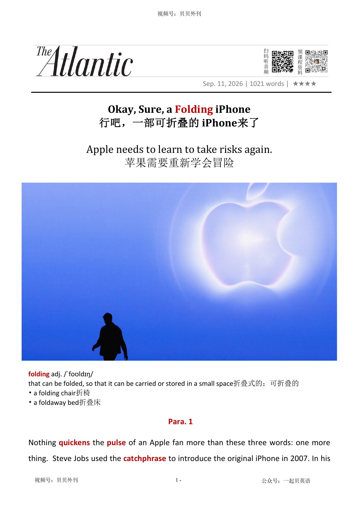

02 HEADLINE / 标题中英文解释
Okay, Sure, a Folding iPhone
行吧，一部可折叠的 iPhone来了
Apple needs to learn to take risks again.
苹果需要重新学会冒险
folding
折叠式的；可折叠的
that can be folded, so that it can be carried or stored in a small space
Okay, Sure, a Folding iPhone
行吧，一部可折叠的 iPhone来了
Apple needs to learn to take risks again.
苹果需要重新学会冒险
折叠式的；可折叠的
that can be folded, so that it can be carried or stored in a small space文章用一场假想的苹果新品发布会观察苹果的创新困境。
开头先借“one more thing”制造期待：新任 CEO 约翰·特努斯上任九天后，推出售价 2000 美元的折叠屏 iPhone Duo，但作者很快指出，这款产品的核心卖点只是铰链和折叠屏，三星等竞争对手早已进入这一市场。
随后文章梳理苹果同时发布的 Apple Watch、AirPods 和 iPhone 18 Pro 等硬件，认为苹果越来越擅长用高价硬件和订阅服务从存量用户身上继续获利。
中段把真正威胁转向 AI：用户未来的数字入口可能从 iPhone 变成 ChatGPT、Claude 或 AI-first 设备，而苹果在 Siri、Apple Intelligence 和开发者生态上仍显落后。
后半部分承认苹果的保守也有好处：它没有像其他科技巨头一样疯狂烧钱建数据中心，隐私保护仍是差异化优势。
但文章结论是，苹果不能只靠庞大的硬件基本盘和隐私口碑拖延时间；如果想继续定义未来，就必须重新学会冒险。
The article imagines a new Apple launch event. John Ternus has just become Apple’s CEO, and he uses the famous words “one more thing.” Apple then introduces a $2,000 folding iPhone called the iPhone Duo.
For Apple fans, this sounds exciting at first. However, the writer is not very impressed.
Folding phones are not new. Samsung and other companies have sold them for years.
The iPhone Duo may have a clever hinge and a large screen, but it does not feel like a real breakthrough. Apple also announces other products, including new Apple Watches, AirPods and iPhone 18 Pro models.
The writer says Apple is still very good at making money from hardware, higher prices and services such as iCloud and Apple TV. But this also makes the company look careful and boring.
The biggest problem is artificial intelligence. Today, the iPhone is the main door to people’s digital lives.
In the future, AI assistants such as ChatGPT or Claude may become that door. Other companies are already trying to build AI-first devices.
Apple wants Siri and Apple Intelligence to become a private AI hub, but Siri is still weak and Apple may need help from Google. The article says Apple still has advantages.
It has many users, strong products and a reputation for protecting privacy. It is also not spending money as wildly as some AI companies.
But if Apple wants to lead the next era of technology, it cannot only protect its old business. It must take risks again.
新品发布会首秀（Para 1-2） ├─ 经典开场：新任CEO说出“one more thing” ├─ 重磅硬件：折叠款iPhone Duo，铰链设计亮眼 └─ 产品短板：定价高昂，竞品早已入局，新意不足 全系列新品与盈利转向（Para 3-4） ├─ 多款硬件：智能手表、降噪耳机、常规款iPhone 18 Pro ├─ 营收模式：硬件涨价+订阅服务，深挖存量市场利润 └─ 产品策略：低价机型延后发售，尽显巨头保守 创新危机与AI竞争压力（Para 5-6） ├─ 管理层期许：新任CEO立志重拾创新能力 ├─ 行业变局：AI成为未来赛道，苹果已落后同行 └─ 外部威胁：AI智能设备或将取代iPhone入口地位 苹果AI布局与现实困境（Para 7-8） ├─ 战略方向：打造以隐私为核心的AI智能中枢 ├─ 核心短板：Siri长期体验不佳，甚至依赖谷歌AI └─ 落地难题：难以说服开发者适配苹果智能生态 巨头现状与未来出路（Para 9-10） ├─ 短期优势：不盲目烧钱，隐私策略形成差异化壁垒 ├─ 缓冲空间：依靠硬件龙头地位，争取自研AI窗口期 └─ 最终抉择：想要赢得未来，必须重拾冒险精神
Nothing quickens加快 the pulse脉搏 of an Apple fan more than these three words: one more thing. Steve Jobs used the catchphrase口头禅 to introduce the original iPhone in 2007. In his 15 years running the company, Tim Cook deployed部署 it only a handful of times, including before his 2014 announcement of the Apple Watch. Today, nine days into his tenure任期 as Apple’s CEO, John Ternus said the magic words. Apple’s next big invention, the company revealed at a launch event in Cupertino, is a $2,000 iPhone that sports穿戴—get ready—a “remarkable hinge铰链.”
没有什么比这句话更能让苹果粉丝心跳加速了——“One more thing”。2007年，史蒂夫·乔布斯正是用这句经典台词推出了第一代 iPhone。在执掌苹果的十五年里，蒂姆·库克只寥寥数次用过这句话，其中一次是在2014年发布 Apple Watch 之前。而今天，在接任苹果首席执行官仅9天后，约翰·特努斯说出了那句充满魔力的话。在库比蒂诺（位于硅谷，苹果全球总部所在地）举行的新品发布会上，苹果揭晓了自己的下一项重大创新，一部售价2000美元的 iPhone，而它最大的卖点，准备好了吗？是一根“非同凡响的铰链”。
This is the iPhone Duo二人组合, a foldable gadget小器械 that opens like a book to reveal a capacious容量大的 7.6-inch英寸 screen. Billed as the most versatile多才多艺的 iPhone, it can be used in folded or unfolded form, and in split-screen or full-screen modes. The screen appears seamless无缝的 when open, which is a clever engineering feat技艺. Yet an iPhone that blossoms开花 into an iPad Mini seems unlikely to change many lives—especially at the price of a MacBook Pro. And foldable smartphones have been on the market since Samsung popularized使普及 the category, in 2019. In the pantheon一群最重要或最著名的人 of “one more things,” the Duo feels like a dud失败的人.
这就是 iPhone Duo，是一部可以像书本一样展开的折叠设备。打开之后，可以看到一块7.6英寸屏幕。苹果将其称为史上“最全能的 iPhone”：既能折叠，也能展开使用；既支持分屏，也支持全屏。当屏幕完全展开时，几乎看不到任何折痕，这无疑是一项精妙的工程壮举。然而，一部能够“变身”为 iPad Mini 的 iPhone，恐怕很难真正改变多少人的生活，尤其是在它售价堪比一台 MacBook Pro 的情况下。更何况，自从三星在2019年将折叠手机推向主流市场以来，这类产品早已不是什么新鲜事物。放在苹果历年来那些令人惊叹的“One more thing”时刻中，Duo 更像是一场令人失望的平庸之作。
Apple also announced several other devices today, all pitched推销 in superlative极佳的 terms by executives to obligatory必须的 applause. The most interesting might be new versions of the Apple Watch that will listen for sounds such as sirens汽笛 and doorbells门铃, take notes on your conversations, or play back the past 15 seconds of what someone just said to you. (Exactly how all of that will work, and how well, is not yet clear.) There are also new AirPods with improved noise cancellation. The new iPhone 18 Pro and iPhone 18 Pro Max—the ones that don’t fold—offer “the longest battery life in iPhone history and the most advanced pro-camera system ever,” the company said. They also come in “a sophisticated and unique new color,” which is burgundy紫红色.
苹果今天还发布了多款新品。和往常一样，高管们极尽溢美之词介绍产品，台下则报以例行的掌声。其中最有意思的，或许是新一代 Apple Watch。它不仅能够识别警笛声、门铃声等环境声音，还能记录谈话内容，甚至重新播放对方刚刚过去十五秒内跟你说过的话。当然，这些功能究竟会如何实现、实际效果如何，目前仍不得而知。与此同时，新款 AirPods 拥有更出色的降噪能力。至于不折叠的 iPhone 18 Pro 和 iPhone 18 Pro Max，苹果宣称它们拥有“iPhone 史上最长续航”和“迄今最先进的专业级影像系统”。此外，它们还推出了一种“精致而独特的新配色”。这种颜色叫——酒红色。
Apple may have once captured people’s imagination. Now it also captures a lot more of their money. On top of its hardware sales, the tech giant is raking in subscription fees to Apple Music, Apple News, Apple TV, iCloud, and more. Earlier this summer, the company announced price hikes远足 on many of its products and a leasing租进 program in partnership with Klarna for anyone who blinks at the sticker粘贴标签 prices. One thing it didn’t announce today was the base iPhone 18, or any of its other less expensive models, which now seem likely to be released after the holiday buying season. Apple has begun to feel like a late-stage tech giant, squeezing榨出 residual剩余的 value from markets it has long since saturated使湿透.
苹果曾经总能惊艳大家的想象；如今，更多的是在掏空消费者的钱包。除了硬件销售之外，这家科技巨头还源源不断地从 Apple Music、Apple News、Apple TV、iCloud 等订阅服务中收取费用。今年夏天，苹果进一步上调了多款产品价格；对于那些被高昂标价吓到的人，它甚至联合 Klarna 推出了分期租赁计划。而今天发布会上没有出现的一样东西，是基础版 iPhone18，以及其他价格相对亲民的型号。这些产品如今似乎更有可能被安排在假日购物季之后发布。苹果越来越像一家步入成熟晚期的科技巨头：在早已被自己占满的市场里，继续榨取最后一点剩余价值。
Ternus, an engineer who led Apple’s hardware division, arrives with the promise of reviving苏醒 the company’s penchant爱好 for creativity. In his first company-wide memo备忘录 as CEO, he told employees he couldn’t wait to “build the future” with them. The companies that are actually building the future these days, for better and worse, are the ones pushing the boundaries of artificial intelligence. Apple is not among them. If there is to be a real threat to Apple’s core business, it is likely to come from AI.
特努斯是一名工程师，曾长期负责苹果硬件业务。他的上任，被寄予重振苹果创造力传统的厚望。在担任 CEO 后发出的第一封公司全员信中，他告诉员工，自己迫不及待地想与大家一起“创造未来”。但今天真正在创造未来的公司，无论这种未来是福是祸，其实是那些不断突破人工智能边界的企业。而苹果，并不在其中。如果未来真的有什么力量能够威胁苹果的核心业务，那么大概率就是人工智能。
For now, the iPhone is the entry point to users’ digital lives: messages, emails, websites, and apps. As chatbot users deepen their relationships with ChatGPT and Claude, those personal assistants could become the primary gateway大门口 to online tasks and information. At least, that’s what many in the AI industry believe. They are racing to build AI-first devices—pendants吊坠, glasses, speakers, and so on. Jony Ive, Apple’s former chief design officer, is working with OpenAI on what is rumored to be a smart speaker the size of hockey puck冰球. Apple was irked使烦恼 enough that it sued OpenAI earlier this year, alleging that it had poached盗用 employees and pilfered偷窃 trade secrets; OpenAI has denied wrongdoing违法行为.
眼下，iPhone仍然是人们数字生活的入口：短信、邮件、网页、各类应用程序。但随着越来越多用户与 ChatGPT、Claude 等聊天机器人建立起深度关系，这些 AI 助手或许将成为人们获取信息、完成任务的首要入口。至少，AI 行业的许多人是这样相信的。因此，他们正在疯狂打造各种“AI优先设备”：挂坠式设备、智能眼镜、智能音箱等。苹果前首席设计官乔尼·艾夫如今正与OpenAI合作开发一款据传只有冰球大小的智能音箱。苹果对此显然极为恼火。今年早些时候，它甚至起诉了 OpenAI，指控其挖走苹果员工并窃取商业机密；OpenAI 则否认了所有不当行为。
Another candidate to build the first proper AI device is, of course, Apple itself. There were signs today that Ternus grasps抓紧 the assignment工作: He led the event with a vision of the iPhone as an “intelligent personal hub” through which Siri and Apple Intelligence become the AI-powered command centers for all of the information stored on and sensed by a customer’s Apple devices—their calendar, contacts, messages, movements, and everything their iPhone, Apple Watch, and AirPods can see and hear. Those are, he acknowledged, “the most private details of your daily life.” That could work to Apple’s advantage; the company has cultivated培养 a reputation for safeguarding保护 users’ privacy.
当然，另一个有能力打造出真正 AI 设备的有力竞争者，依然是苹果自己。而从今天的发布会来看，特努斯似乎已经意识到了这一使命。他在发布会中描绘了一幅蓝图：未来的 iPhone 将成为一个“智能个人中枢”。Siri 与 Apple Intelligence 将化身为 AI 指挥中心，统筹管理存储在各类设备上或被感知到的一切信息，日历、联系人、短信、行踪，以及 iPhone、Apple Watch 和 AirPods 所看到、听到的一切。正如特努斯所承认的那样：“这些都是你日常生活中最私密的细节。”而这恰恰可能成为苹果最大的优势。多年来，苹果一直精心塑造着自己保护用户隐私的形象。
One problem: Despite years of promises of coming improvements, Siri is still not very good. Earlier this year, Apple agreed to pay $250 million to some iPhone 15 and 16 customers over claims that it had falsely advertised the AI capabilities of those devices. In January, Apple was reduced to contracting与…订立合同 with archrival主要竞争对手 Google to supply the underlying根本的 AI for a revamped彻底改造 version of Siri. Even so, it is reportedly having some trouble getting app developers to buy in. (An Apple spokesperson didn’t respond to a request for comment.)
问题在于：尽管苹果已经承诺改进 Siri 多年，但 Siri 依然不好用。今年早些时候，苹果同意向部分 iPhone 15 和 iPhone 16 用户支付2.5亿美元赔偿金，以解决其涉嫌夸大设备 AI 功能的指控。今年1月，苹果甚至不得不与宿敌谷歌达成合作，让谷歌为改版的 Siri 提供底层人工智能。即便如此，据报道，苹果在说服开发者接受这一体系时仍然困难重重。对此，苹果发言人没有回应媒体的置评请求。
Being the boring tech giant right now has some upsides积极方面. Unlike the industry’s other titans, Apple is not lighting money on fire in a frantic紧张忙乱的 race to build data centers and superintelligent AI. It also appears to be the tech giant whose products are the least likely to bring about导致 the extinction灭绝 of the human race anytime soon, for whatever that’s worth姑且供参考. Its emphasis on user privacy, with AI tools that keep people’s data on their device instead of sending them to the cloud, remains an important differentiator差异化因素 for those who care about such things.
在当下这个时代，做一家“无聊”的科技巨头其实也有好处。与其他科技巨头不同，苹果没有在建造数据中心和追逐超级人工智能的竞赛中疯狂烧钱。至少从目前来看，它的产品也是最不可能在短期内导致人类灭绝的科技产品。苹果对于用户隐私的强调，其 AI 工具把用户数据保存在本地设备，而不是上传至云端，对于重视隐私的人群而言，这是一个难以忽视的差异化卖点。
Maybe Apple can go on a while longer as the unchallenged king of fancy异常复杂的 consumer-tech hardware while everyone else fights to the death over AI software and infrastructure. Maybe rebuilding Siri around Google’s AI will buy Apple time to eventually develop its own powerful models, the way it leaned on Intel for chips for years before creating its own. But if Ternus really wants to build the future, he will eventually have to do something that once came naturally to Apple when it was an underdog处于劣势的人: take a risk.
或许，苹果还能继续稳坐高端消费电子硬件之王的宝座，而看着其他公司为了 AI 软件和基础设施厮杀不休。或许，借助谷歌的 AI 技术重塑 Siri，能够为苹果争取足够时间，最终开发出属于自己的强大模型。毕竟，当年苹果也曾长期依赖英特尔芯片，随后才完成自研芯片的华丽转身。但是，如果特努斯真的想要“创造未来”， 他就必须在某一天重新做回那件苹果作为挑战者时曾习以为常的事：勇敢地承担风险。
折叠式的；可折叠的
that can be folded, so that it can be carried or stored in a small space
a folding chair折椅
（使）加快，加速
to become quicker or make sth quicker
She felt her heartbeat quicken as he approached.随着他的走近，她觉得自己的心跳加速了。
Nothing quickens the pulse of an Apple fan more than these three words: one more thing.
没有什么比这句话更能让苹果粉丝心跳加速了——“One more thing”。2007年，史蒂夫·乔布斯正是用这句经典台词推出了第一代 iPhone。在执掌苹果的十五年里，蒂姆·库克只寥寥数次用过这句话，其中一次是在2014年发布 Apple Watch 之前。而今天，在接任苹果首席执行官仅9天后，约翰·特努斯说出了那句充满魔力的话。在库比蒂诺（位于硅谷，苹果全球总部所在地）举行的新品发布会上，苹果揭晓了自己的下一项重大创新，一部售价2…
脉搏；脉率
the regular beat of blood as it is sent around the body, that can be felt in different places, especially on the inside part of the wrist; the number of times the blood beats in a minute
a strong/weak pulse 强╱弱脉搏
Nothing quickens the pulse of an Apple fan more than these three words: one more thing.
没有什么比这句话更能让苹果粉丝心跳加速了——“One more thing”。2007年，史蒂夫·乔布斯正是用这句经典台词推出了第一代 iPhone。在执掌苹果的十五年里，蒂姆·库克只寥寥数次用过这句话，其中一次是在2014年发布 Apple Watch 之前。而今天，在接任苹果首席执行官仅9天后，约翰·特努斯说出了那句充满魔力的话。在库比蒂诺（位于硅谷，苹果全球总部所在地）举行的新品发布会上，苹果揭晓了自己的下一项重大创新，一部售价2…
口头禅；标志性用语；宣传语
a well-known phrase or expression that is repeatedly used by a particular person, group, or in advertising
The advertising campaign became successful thanks to its memorable catchphrase. 这场广告宣传活动因其令人难忘的宣传语而大获成功。
Steve Jobs used the catchphrase to introduce the original iPhone in 2007.
没有什么比这句话更能让苹果粉丝心跳加速了——“One more thing”。2007年，史蒂夫·乔布斯正是用这句经典台词推出了第一代 iPhone。在执掌苹果的十五年里，蒂姆·库克只寥寥数次用过这句话，其中一次是在2014年发布 Apple Watch 之前。而今天，在接任苹果首席执行官仅9天后，约翰·特努斯说出了那句充满魔力的话。在库比蒂诺（位于硅谷，苹果全球总部所在地）举行的新品发布会上，苹果揭晓了自己的下一项重大创新，一部售价2…
部署，调度（军队或武器）
1. to move soldiers or weapons into a position where they are ready for military action
2 000 troops were deployed in the area.那个地区部署了2 000人的部队。 2. to use sth effectively有效地利用；调动
In his 15 years running the company, Tim Cook deployed it only a handful of times, including before his 2014 announcement of the Apple Watch.
没有什么比这句话更能让苹果粉丝心跳加速了——“One more thing”。2007年，史蒂夫·乔布斯正是用这句经典台词推出了第一代 iPhone。在执掌苹果的十五年里，蒂姆·库克只寥寥数次用过这句话，其中一次是在2014年发布 Apple Watch 之前。而今天，在接任苹果首席执行官仅9天后，约翰·特努斯说出了那句充满魔力的话。在库比蒂诺（位于硅谷，苹果全球总部所在地）举行的新品发布会上，苹果揭晓了自己的下一项重大创新，一部售价2…
（尤指重要政治职务的）任期，任职
the period of time when sb holds an important job, especially a political one; the act of holding an important job
his four-year tenure as President他的四年总统任期
Today, nine days into his tenure as Apple’s CEO, John Ternus said the magic words.
没有什么比这句话更能让苹果粉丝心跳加速了——“One more thing”。2007年，史蒂夫·乔布斯正是用这句经典台词推出了第一代 iPhone。在执掌苹果的十五年里，蒂姆·库克只寥寥数次用过这句话，其中一次是在2014年发布 Apple Watch 之前。而今天，在接任苹果首席执行官仅9天后，约翰·特努斯说出了那句充满魔力的话。在库比蒂诺（位于硅谷，苹果全球总部所在地）举行的新品发布会上，苹果揭晓了自己的下一项重大创新，一部售价2…
穿戴；展示；炫耀（某种外观、特征等）
to wear, have, or show something proudly or noticeably
He was sporting a new beard when he returned from vacation. 他度假回来时留起了新胡子。
Apple’s next big invention, the company revealed at a launch event in Cupertino, is a $2,000 iPhone that sports—get ready—a “remarkable hinge.”
没有什么比这句话更能让苹果粉丝心跳加速了——“One more thing”。2007年，史蒂夫·乔布斯正是用这句经典台词推出了第一代 iPhone。在执掌苹果的十五年里，蒂姆·库克只寥寥数次用过这句话，其中一次是在2014年发布 Apple Watch 之前。而今天，在接任苹果首席执行官仅9天后，约翰·特努斯说出了那句充满魔力的话。在库比蒂诺（位于硅谷，苹果全球总部所在地）举行的新品发布会上，苹果揭晓了自己的下一项重大创新，一部售价2…
铰链；合叶
a piece of metal, plastic, etc. on which a door, lid or gate moves freely as it opens or closes
The door had been pulled off its hinges.门从铰链上扯下来了。
Apple’s next big invention, the company revealed at a launch event in Cupertino, is a $2,000 iPhone that sports—get ready—a “remarkable hinge.”
没有什么比这句话更能让苹果粉丝心跳加速了——“One more thing”。2007年，史蒂夫·乔布斯正是用这句经典台词推出了第一代 iPhone。在执掌苹果的十五年里，蒂姆·库克只寥寥数次用过这句话，其中一次是在2014年发布 Apple Watch 之前。而今天，在接任苹果首席执行官仅9天后，约翰·特努斯说出了那句充满魔力的话。在库比蒂诺（位于硅谷，苹果全球总部所在地）举行的新品发布会上，苹果揭晓了自己的下一项重大创新，一部售价2…
二人组合；搭档；二人组
two people who work, perform, or are associated together
The comedy duo became famous through their online videos. 这个喜剧二人组凭借网络视频走红。
This is the iPhone Duo, a foldable gadget that opens like a book to reveal a capacious 7.6-inch screen.
这就是 iPhone Duo，是一部可以像书本一样展开的折叠设备。打开之后，可以看到一块7.6英寸屏幕。苹果将其称为史上“最全能的 iPhone”：既能折叠，也能展开使用；既支持分屏，也支持全屏。当屏幕完全展开时，几乎看不到任何折痕，这无疑是一项精妙的工程壮举。然而，一部能够“变身”为 iPad Mini 的 iPhone，恐怕很难真正改变多少人的生活，尤其是在它售价堪比一台 MacBook Pro 的情况下。更何况，自从三星在2019…
小器械；小装置；电子小玩意儿
a small technological device or tool, especially one that is useful, clever, or innovative
The company unveiled several new gadgets at its annual product event. 这家公司在年度产品发布会上推出了几款新的电子产品。
This is the iPhone Duo, a foldable gadget that opens like a book to reveal a capacious 7.6-inch screen.
这就是 iPhone Duo，是一部可以像书本一样展开的折叠设备。打开之后，可以看到一块7.6英寸屏幕。苹果将其称为史上“最全能的 iPhone”：既能折叠，也能展开使用；既支持分屏，也支持全屏。当屏幕完全展开时，几乎看不到任何折痕，这无疑是一项精妙的工程壮举。然而，一部能够“变身”为 iPad Mini 的 iPhone，恐怕很难真正改变多少人的生活，尤其是在它售价堪比一台 MacBook Pro 的情况下。更何况，自从三星在2019…
容量大的
Something that is capacious has a lot of space to put things in.
...her capacious handbag. ...她的大容量手提包。
This is the iPhone Duo, a foldable gadget that opens like a book to reveal a capacious 7.6-inch screen.
这就是 iPhone Duo，是一部可以像书本一样展开的折叠设备。打开之后，可以看到一块7.6英寸屏幕。苹果将其称为史上“最全能的 iPhone”：既能折叠，也能展开使用；既支持分屏，也支持全屏。当屏幕完全展开时，几乎看不到任何折痕，这无疑是一项精妙的工程壮举。然而，一部能够“变身”为 iPad Mini 的 iPhone，恐怕很难真正改变多少人的生活，尤其是在它售价堪比一台 MacBook Pro 的情况下。更何况，自从三星在2019…
英寸（长度单位，等于2.54厘米，1英尺等于12英寸）
a unit for measuring length, equal to 2.54 centimetres. There are 12 inches in a foot.
1.14 inches of rain fell last night.昨晚的降雨量为1.14英寸。
This is the iPhone Duo, a foldable gadget that opens like a book to reveal a capacious 7.6-inch screen.
这就是 iPhone Duo，是一部可以像书本一样展开的折叠设备。打开之后，可以看到一块7.6英寸屏幕。苹果将其称为史上“最全能的 iPhone”：既能折叠，也能展开使用；既支持分屏，也支持全屏。当屏幕完全展开时，几乎看不到任何折痕，这无疑是一项精妙的工程壮举。然而，一部能够“变身”为 iPad Mini 的 iPhone，恐怕很难真正改变多少人的生活，尤其是在它售价堪比一台 MacBook Pro 的情况下。更何况，自从三星在2019…
把……宣传为；把……称为；把……定位为
to describe or advertise someone or something as having a particular role, quality, or status
The company bills itself as a leader in artificial intelligence. 这家公司将自己定位为人工智能领域的领导者。
多才多艺的；有多种技能的；多面手的
1. able to do many different things
He's a versatile actor who has played a wide variety of parts. 他是个多才多艺的演员，扮演过各种各样的角色。 2. having many different uses多用途的；多功能的
Billed as the most versatile iPhone, it can be used in folded or unfolded form, and in split-screen or full-screen modes.
这就是 iPhone Duo，是一部可以像书本一样展开的折叠设备。打开之后，可以看到一块7.6英寸屏幕。苹果将其称为史上“最全能的 iPhone”：既能折叠，也能展开使用；既支持分屏，也支持全屏。当屏幕完全展开时，几乎看不到任何折痕，这无疑是一项精妙的工程壮举。然而，一部能够“变身”为 iPad Mini 的 iPhone，恐怕很难真正改变多少人的生活，尤其是在它售价堪比一台 MacBook Pro 的情况下。更何况，自从三星在2019…
无（接）缝的
1. without a seam
a seamless garment无缝衣服 2. with no spaces or pauses between one part and the next（两部分之间）无空隙的，不停顿的
The screen appears seamless when open, which is a clever engineering feat.
这就是 iPhone Duo，是一部可以像书本一样展开的折叠设备。打开之后，可以看到一块7.6英寸屏幕。苹果将其称为史上“最全能的 iPhone”：既能折叠，也能展开使用；既支持分屏，也支持全屏。当屏幕完全展开时，几乎看不到任何折痕，这无疑是一项精妙的工程壮举。然而，一部能够“变身”为 iPad Mini 的 iPhone，恐怕很难真正改变多少人的生活，尤其是在它售价堪比一台 MacBook Pro 的情况下。更何况，自从三星在2019…
技艺；武艺；功绩；英勇事迹
an action or a piece of work that needs skill, strength or courage
The tunnel is a brilliant feat of engineering.这条隧道是工程方面的光辉业绩。
The screen appears seamless when open, which is a clever engineering feat.
这就是 iPhone Duo，是一部可以像书本一样展开的折叠设备。打开之后，可以看到一块7.6英寸屏幕。苹果将其称为史上“最全能的 iPhone”：既能折叠，也能展开使用；既支持分屏，也支持全屏。当屏幕完全展开时，几乎看不到任何折痕，这无疑是一项精妙的工程壮举。然而，一部能够“变身”为 iPad Mini 的 iPhone，恐怕很难真正改变多少人的生活，尤其是在它售价堪比一台 MacBook Pro 的情况下。更何况，自从三星在2019…
开花 2. to become more healthy, confident or successful变得更加健康（或自信、成功）
1. to produce blossom
She has visibly blossomed over the last few months.她近几个月以来身体明显好多了。
Yet an iPhone that blossoms into an iPad Mini seems unlikely to change many lives—especially at the price of a MacBook Pro.
这就是 iPhone Duo，是一部可以像书本一样展开的折叠设备。打开之后，可以看到一块7.6英寸屏幕。苹果将其称为史上“最全能的 iPhone”：既能折叠，也能展开使用；既支持分屏，也支持全屏。当屏幕完全展开时，几乎看不到任何折痕，这无疑是一项精妙的工程壮举。然而，一部能够“变身”为 iPad Mini 的 iPhone，恐怕很难真正改变多少人的生活，尤其是在它售价堪比一台 MacBook Pro 的情况下。更何况，自从三星在2019…
使普及；推广；使流行
to make something widely known, accepted, or used
The company helped popularize smartphones around the world. 这家公司推动了智能手机在全球的普及。
And foldable smartphones have been on the market since Samsung popularized the category, in 2019.
这就是 iPhone Duo，是一部可以像书本一样展开的折叠设备。打开之后，可以看到一块7.6英寸屏幕。苹果将其称为史上“最全能的 iPhone”：既能折叠，也能展开使用；既支持分屏，也支持全屏。当屏幕完全展开时，几乎看不到任何折痕，这无疑是一项精妙的工程壮举。然而，一部能够“变身”为 iPad Mini 的 iPhone，恐怕很难真正改变多少人的生活，尤其是在它售价堪比一台 MacBook Pro 的情况下。更何况，自从三星在2019…
一群最重要或最著名的人；名人殿堂；杰出人物群体
a group of the most important or famous people in a particular field or area
She has earned a place in the pantheon of great American writers. 她已经跻身美国伟大作家的名人殿堂。
In the pantheon of “one more things,” the Duo feels like a dud.
这就是 iPhone Duo，是一部可以像书本一样展开的折叠设备。打开之后，可以看到一块7.6英寸屏幕。苹果将其称为史上“最全能的 iPhone”：既能折叠，也能展开使用；既支持分屏，也支持全屏。当屏幕完全展开时，几乎看不到任何折痕，这无疑是一项精妙的工程壮举。然而，一部能够“变身”为 iPad Mini 的 iPhone，恐怕很难真正改变多少人的生活，尤其是在它售价堪比一台 MacBook Pro 的情况下。更何况，自从三星在2019…
失败的人；失败的事物；不成功的产品；哑炮
a person or thing that fails to work, succeed, or live up to expectations
The new smartphone turned out to be a dud. 这款新智能手机结果是个失败的产品。
In the pantheon of “one more things,” the Duo feels like a dud.
这就是 iPhone Duo，是一部可以像书本一样展开的折叠设备。打开之后，可以看到一块7.6英寸屏幕。苹果将其称为史上“最全能的 iPhone”：既能折叠，也能展开使用；既支持分屏，也支持全屏。当屏幕完全展开时，几乎看不到任何折痕，这无疑是一项精妙的工程壮举。然而，一部能够“变身”为 iPad Mini 的 iPhone，恐怕很难真正改变多少人的生活，尤其是在它售价堪比一台 MacBook Pro 的情况下。更何况，自从三星在2019…
推销；争取支持（或生意等）
to try to persuade sb to buy sth, to give you sth or to make a business deal with you
Representatives went to Japan to pitch the company's newest products. 销售代表前往日本推销本公司的最新产品。
Apple also announced several other devices today, all pitched in superlative terms by executives to obligatory applause.
苹果今天还发布了多款新品。和往常一样，高管们极尽溢美之词介绍产品，台下则报以例行的掌声。其中最有意思的，或许是新一代 Apple Watch。它不仅能够识别警笛声、门铃声等环境声音，还能记录谈话内容，甚至重新播放对方刚刚过去十五秒内跟你说过的话。当然，这些功能究竟会如何实现、实际效果如何，目前仍不得而知。与此同时，新款 AirPods 拥有更出色的降噪能力。至于不折叠的 iPhone 18 Pro 和 iPhone 18 Pro Max…
极佳的；卓越的；最优秀的
1. excellent
a superlative performance精彩绝伦的演出 2. relating to adjectives or adverbs that express the highest degree of sth, for example best, worst, slowest and most difficult （形容词或副词）最高级的
Apple also announced several other devices today, all pitched in superlative terms by executives to obligatory applause.
苹果今天还发布了多款新品。和往常一样，高管们极尽溢美之词介绍产品，台下则报以例行的掌声。其中最有意思的，或许是新一代 Apple Watch。它不仅能够识别警笛声、门铃声等环境声音，还能记录谈话内容，甚至重新播放对方刚刚过去十五秒内跟你说过的话。当然，这些功能究竟会如何实现、实际效果如何，目前仍不得而知。与此同时，新款 AirPods 拥有更出色的降噪能力。至于不折叠的 iPhone 18 Pro 和 iPhone 18 Pro Max…
（按法律、规定等）必须的，强制的
1. that you must do because of the law, rules, etc.
It is obligatory for all employees to wear protective clothing.所有员工必须穿防护服装。 2. that you do because you always do it, or other people in the same situation always do it习惯性的；随大溜的；赶时髦的
Apple also announced several other devices today, all pitched in superlative terms by executives to obligatory applause.
苹果今天还发布了多款新品。和往常一样，高管们极尽溢美之词介绍产品，台下则报以例行的掌声。其中最有意思的，或许是新一代 Apple Watch。它不仅能够识别警笛声、门铃声等环境声音，还能记录谈话内容，甚至重新播放对方刚刚过去十五秒内跟你说过的话。当然，这些功能究竟会如何实现、实际效果如何，目前仍不得而知。与此同时，新款 AirPods 拥有更出色的降噪能力。至于不折叠的 iPhone 18 Pro 和 iPhone 18 Pro Max…
汽笛；警报器
1. a device that makes a long loud sound as a signal or warning
an air-raid siren空袭警报器
The most interesting might be new versions of the Apple Watch that will listen for sounds such as sirens and doorbells, take notes on your conversations, or play back the past 15 seconds of what someone just said to you.
苹果今天还发布了多款新品。和往常一样，高管们极尽溢美之词介绍产品，台下则报以例行的掌声。其中最有意思的，或许是新一代 Apple Watch。它不仅能够识别警笛声、门铃声等环境声音，还能记录谈话内容，甚至重新播放对方刚刚过去十五秒内跟你说过的话。当然，这些功能究竟会如何实现、实际效果如何，目前仍不得而知。与此同时，新款 AirPods 拥有更出色的降噪能力。至于不折叠的 iPhone 18 Pro 和 iPhone 18 Pro Max…
门铃
a bell with a button outside a house that you push to let the people inside know that you are there
to ring the doorbell按门铃
The most interesting might be new versions of the Apple Watch that will listen for sounds such as sirens and doorbells, take notes on your conversations, or play back the past 15 seconds of what someone just said to you.
苹果今天还发布了多款新品。和往常一样，高管们极尽溢美之词介绍产品，台下则报以例行的掌声。其中最有意思的，或许是新一代 Apple Watch。它不仅能够识别警笛声、门铃声等环境声音，还能记录谈话内容，甚至重新播放对方刚刚过去十五秒内跟你说过的话。当然，这些功能究竟会如何实现、实际效果如何，目前仍不得而知。与此同时，新款 AirPods 拥有更出色的降噪能力。至于不折叠的 iPhone 18 Pro 和 iPhone 18 Pro Max…
紫红色
1. Burgundy is used to describe things that are purplish-red in colour.
He was wearing a burgundy polyester jacket. 他穿着一件紫红色聚酯纤维夹克。
They also come in “a sophisticated and unique new color,” which is burgundy.
苹果今天还发布了多款新品。和往常一样，高管们极尽溢美之词介绍产品，台下则报以例行的掌声。其中最有意思的，或许是新一代 Apple Watch。它不仅能够识别警笛声、门铃声等环境声音，还能记录谈话内容，甚至重新播放对方刚刚过去十五秒内跟你说过的话。当然，这些功能究竟会如何实现、实际效果如何，目前仍不得而知。与此同时，新款 AirPods 拥有更出色的降噪能力。至于不折叠的 iPhone 18 Pro 和 iPhone 18 Pro Max…
赚大钱（尤指轻易地）
to earn a lot of money, especially when it is done easily
The movie raked in more than $300 million.这部电影轻易赚了3亿多元。
远足；徒步旅行
1. a long walk in the country
They went on a ten-mile hike through the forest.他们做了一次穿越森林的十英里徒步旅行。
Earlier this summer, the company announced price hikes on many of its products and a leasing program in partnership with Klarna for anyone who blinks at the sticker prices.
苹果曾经总能惊艳大家的想象；如今，更多的是在掏空消费者的钱包。除了硬件销售之外，这家科技巨头还源源不断地从 Apple Music、Apple News、Apple TV、iCloud 等订阅服务中收取费用。今年夏天，苹果进一步上调了多款产品价格；对于那些被高昂标价吓到的人，它甚至联合 Klarna 推出了分期租赁计划。而今天发布会上没有出现的一样东西，是基础版 iPhone18，以及其他价格相对亲民的型号。这些产品如今似乎更有可能被安…
租进; 租出
If you lease property or something such as a car from someone or if they lease it to you, they allow you to use it in return for regular payments of money.
He went to Toronto, where he leased an apartment. 他去了多伦多，在那里租了一套公寓。
Earlier this summer, the company announced price hikes on many of its products and a leasing program in partnership with Klarna for anyone who blinks at the sticker prices.
苹果曾经总能惊艳大家的想象；如今，更多的是在掏空消费者的钱包。除了硬件销售之外，这家科技巨头还源源不断地从 Apple Music、Apple News、Apple TV、iCloud 等订阅服务中收取费用。今年夏天，苹果进一步上调了多款产品价格；对于那些被高昂标价吓到的人，它甚至联合 Klarna 推出了分期租赁计划。而今天发布会上没有出现的一样东西，是基础版 iPhone18，以及其他价格相对亲民的型号。这些产品如今似乎更有可能被安…
对……感到惊讶；对……有所顾虑；对……感到犹豫
to react with surprise, hesitation, or concern to something
She didn’t blink at the huge price tag and bought the car anyway.
粘贴标签；贴纸
a sticky label with a picture or message on it, that you stick onto sth
bumper stickers (= on cars) 汽车保险杠粘贴标签
Earlier this summer, the company announced price hikes on many of its products and a leasing program in partnership with Klarna for anyone who blinks at the sticker prices.
苹果曾经总能惊艳大家的想象；如今，更多的是在掏空消费者的钱包。除了硬件销售之外，这家科技巨头还源源不断地从 Apple Music、Apple News、Apple TV、iCloud 等订阅服务中收取费用。今年夏天，苹果进一步上调了多款产品价格；对于那些被高昂标价吓到的人，它甚至联合 Klarna 推出了分期租赁计划。而今天发布会上没有出现的一样东西，是基础版 iPhone18，以及其他价格相对亲民的型号。这些产品如今似乎更有可能被安…
（从某物中）榨出，挤出，拧出
to get liquid out of sth by pressing or twisting it hard
to squeeze the juice from a lemon把一个柠檬的汁挤出来
Apple has begun to feel like a late-stage tech giant, squeezing residual value from markets it has long since saturated.
苹果曾经总能惊艳大家的想象；如今，更多的是在掏空消费者的钱包。除了硬件销售之外，这家科技巨头还源源不断地从 Apple Music、Apple News、Apple TV、iCloud 等订阅服务中收取费用。今年夏天，苹果进一步上调了多款产品价格；对于那些被高昂标价吓到的人，它甚至联合 Klarna 推出了分期租赁计划。而今天发布会上没有出现的一样东西，是基础版 iPhone18，以及其他价格相对亲民的型号。这些产品如今似乎更有可能被安…
剩余的；残留的
remaining at the end of a process
There are still a few residual problems with the computer program.电脑程序还有一些残留问题。
Apple has begun to feel like a late-stage tech giant, squeezing residual value from markets it has long since saturated.
苹果曾经总能惊艳大家的想象；如今，更多的是在掏空消费者的钱包。除了硬件销售之外，这家科技巨头还源源不断地从 Apple Music、Apple News、Apple TV、iCloud 等订阅服务中收取费用。今年夏天，苹果进一步上调了多款产品价格；对于那些被高昂标价吓到的人，它甚至联合 Klarna 推出了分期租赁计划。而今天发布会上没有出现的一样东西，是基础版 iPhone18，以及其他价格相对亲民的型号。这些产品如今似乎更有可能被安…
使湿透；浸透
1. to make sth completely wet
The continuous rain had saturated the soil.连绵不断的雨把土地淋了个透。 2. to fill sth/sb completely with sth so that it is impossible or useless to add any more使充满；使饱和
Apple has begun to feel like a late-stage tech giant, squeezing residual value from markets it has long since saturated.
苹果曾经总能惊艳大家的想象；如今，更多的是在掏空消费者的钱包。除了硬件销售之外，这家科技巨头还源源不断地从 Apple Music、Apple News、Apple TV、iCloud 等订阅服务中收取费用。今年夏天，苹果进一步上调了多款产品价格；对于那些被高昂标价吓到的人，它甚至联合 Klarna 推出了分期租赁计划。而今天发布会上没有出现的一样东西，是基础版 iPhone18，以及其他价格相对亲民的型号。这些产品如今似乎更有可能被安…
（使）苏醒，复活
to become, or to make sb/sth become, conscious or healthy and strong again
The flowers soon revived in water.这些花见了水很快就活过来了。
Ternus, an engineer who led Apple’s hardware division, arrives with the promise of reviving the company’s penchant for creativity.
特努斯是一名工程师，曾长期负责苹果硬件业务。他的上任，被寄予重振苹果创造力传统的厚望。在担任 CEO 后发出的第一封公司全员信中，他告诉员工，自己迫不及待地想与大家一起“创造未来”。但今天真正在创造未来的公司，无论这种未来是福是祸，其实是那些不断突破人工智能边界的企业。而苹果，并不在其中。如果未来真的有什么力量能够威胁苹果的核心业务，那么大概率就是人工智能。
爱好；嗜爱
a special liking for sth
She has a penchant for champagne.她酷爱香槟酒。
Ternus, an engineer who led Apple’s hardware division, arrives with the promise of reviving the company’s penchant for creativity.
特努斯是一名工程师，曾长期负责苹果硬件业务。他的上任，被寄予重振苹果创造力传统的厚望。在担任 CEO 后发出的第一封公司全员信中，他告诉员工，自己迫不及待地想与大家一起“创造未来”。但今天真正在创造未来的公司，无论这种未来是福是祸，其实是那些不断突破人工智能边界的企业。而苹果，并不在其中。如果未来真的有什么力量能够威胁苹果的核心业务，那么大概率就是人工智能。
备忘录
an official note from one person to another in the same organization
to write/send/circulate a memo 写╱发送╱传阅备忘录
In his first company-wide memo as CEO, he told employees he couldn’t wait to “build the future” with them.
特努斯是一名工程师，曾长期负责苹果硬件业务。他的上任，被寄予重振苹果创造力传统的厚望。在担任 CEO 后发出的第一封公司全员信中，他告诉员工，自己迫不及待地想与大家一起“创造未来”。但今天真正在创造未来的公司，无论这种未来是福是祸，其实是那些不断突破人工智能边界的企业。而苹果，并不在其中。如果未来真的有什么力量能够威胁苹果的核心业务，那么大概率就是人工智能。
不论好坏；不管结果如何；无论情况变好还是变坏
whether the result is good or bad; regardless of whether the situation improves or becomes worse
For better or worse, technology has changed the way we live. 不管好坏，科技已经改变了我们的生活方式。
大门口；门道；出入口
1. an opening in a wall or fence that can be closed by a gate
They turned through the gateway on the left.他们穿过出入口向左转去。 2. a means of getting or achieving sth途径；方法；手段
As chatbot users deepen their relationships with ChatGPT and Claude, those personal assistants could become the primary gateway to online tasks and information.
眼下，iPhone仍然是人们数字生活的入口：短信、邮件、网页、各类应用程序。但随着越来越多用户与 ChatGPT、Claude 等聊天机器人建立起深度关系，这些 AI 助手或许将成为人们获取信息、完成任务的首要入口。至少，AI 行业的许多人是这样相信的。因此，他们正在疯狂打造各种“AI优先设备”：挂坠式设备、智能眼镜、智能音箱等。苹果前首席设计官乔尼·艾夫如今正与OpenAI合作开发一款据传只有冰球大小的智能音箱。苹果对此显然极为恼火。…
吊坠；挂坠；项链坠饰
a piece of jewelry that hangs from a chain worn around the neck
She was wearing a gold pendant around her neck. 她脖子上戴着一枚金色吊坠。
They are racing to build AI-first devices—pendants, glasses, speakers, and so on.
眼下，iPhone仍然是人们数字生活的入口：短信、邮件、网页、各类应用程序。但随着越来越多用户与 ChatGPT、Claude 等聊天机器人建立起深度关系，这些 AI 助手或许将成为人们获取信息、完成任务的首要入口。至少，AI 行业的许多人是这样相信的。因此，他们正在疯狂打造各种“AI优先设备”：挂坠式设备、智能眼镜、智能音箱等。苹果前首席设计官乔尼·艾夫如今正与OpenAI合作开发一款据传只有冰球大小的智能音箱。苹果对此显然极为恼火。…
谣传；传说
be rumouredto be reported as a rumour and possibly not true
It's widely rumoured that she's getting promoted.到处都在传要提拔她了。
冰球；冰球球体
a small, hard, flat rubber disk that players hit with a stick in ice hockey
The player shot the hockey puck into the net. 这名球员将冰球射入了球门。
Jony Ive, Apple’s former chief design officer, is working with OpenAI on what is rumored to be a smart speaker the size of hockey puck.
眼下，iPhone仍然是人们数字生活的入口：短信、邮件、网页、各类应用程序。但随着越来越多用户与 ChatGPT、Claude 等聊天机器人建立起深度关系，这些 AI 助手或许将成为人们获取信息、完成任务的首要入口。至少，AI 行业的许多人是这样相信的。因此，他们正在疯狂打造各种“AI优先设备”：挂坠式设备、智能眼镜、智能音箱等。苹果前首席设计官乔尼·艾夫如今正与OpenAI合作开发一款据传只有冰球大小的智能音箱。苹果对此显然极为恼火。…
使烦恼；激怒
to annoy or irritate sb
Her flippant tone irked him.她轻佻的语调使他很生气。
Apple was irked enough that it sued OpenAI earlier this year, alleging that it had poached employees and pilfered trade secrets; OpenAI has denied wrongdoing.
眼下，iPhone仍然是人们数字生活的入口：短信、邮件、网页、各类应用程序。但随着越来越多用户与 ChatGPT、Claude 等聊天机器人建立起深度关系，这些 AI 助手或许将成为人们获取信息、完成任务的首要入口。至少，AI 行业的许多人是这样相信的。因此，他们正在疯狂打造各种“AI优先设备”：挂坠式设备、智能眼镜、智能音箱等。苹果前首席设计官乔尼·艾夫如今正与OpenAI合作开发一款据传只有冰球大小的智能音箱。苹果对此显然极为恼火。…
盗用；挖走（人员等）
to take and use sb/sth that belongs to sb/sth else, especially in a secret, dishonest or unfair way
The company poached the contract from their main rivals.这家公司窃取了其主要竞争对手的合同。
Apple was irked enough that it sued OpenAI earlier this year, alleging that it had poached employees and pilfered trade secrets; OpenAI has denied wrongdoing.
眼下，iPhone仍然是人们数字生活的入口：短信、邮件、网页、各类应用程序。但随着越来越多用户与 ChatGPT、Claude 等聊天机器人建立起深度关系，这些 AI 助手或许将成为人们获取信息、完成任务的首要入口。至少，AI 行业的许多人是这样相信的。因此，他们正在疯狂打造各种“AI优先设备”：挂坠式设备、智能眼镜、智能音箱等。苹果前首席设计官乔尼·艾夫如今正与OpenAI合作开发一款据传只有冰球大小的智能音箱。苹果对此显然极为恼火。…
偷窃（小东西）；小偷小摸；（尤指员工）偷窃
to steal things of little value or in small quantities, especially from the place where you work
He was caught pilfering.他行窃时被抓个正着。
Apple was irked enough that it sued OpenAI earlier this year, alleging that it had poached employees and pilfered trade secrets; OpenAI has denied wrongdoing.
眼下，iPhone仍然是人们数字生活的入口：短信、邮件、网页、各类应用程序。但随着越来越多用户与 ChatGPT、Claude 等聊天机器人建立起深度关系，这些 AI 助手或许将成为人们获取信息、完成任务的首要入口。至少，AI 行业的许多人是这样相信的。因此，他们正在疯狂打造各种“AI优先设备”：挂坠式设备、智能眼镜、智能音箱等。苹果前首席设计官乔尼·艾夫如今正与OpenAI合作开发一款据传只有冰球大小的智能音箱。苹果对此显然极为恼火。…
违法行为；不当行为；恶行
illegal or immoral behavior; an act of doing something wrong
The investigation found evidence of serious wrongdoing within the company. 调查发现了该公司内部存在严重不当行为的证据。
Apple was irked enough that it sued OpenAI earlier this year, alleging that it had poached employees and pilfered trade secrets; OpenAI has denied wrongdoing.
眼下，iPhone仍然是人们数字生活的入口：短信、邮件、网页、各类应用程序。但随着越来越多用户与 ChatGPT、Claude 等聊天机器人建立起深度关系，这些 AI 助手或许将成为人们获取信息、完成任务的首要入口。至少，AI 行业的许多人是这样相信的。因此，他们正在疯狂打造各种“AI优先设备”：挂坠式设备、智能眼镜、智能音箱等。苹果前首席设计官乔尼·艾夫如今正与OpenAI合作开发一款据传只有冰球大小的智能音箱。苹果对此显然极为恼火。…
抓紧；理解；领会
to take a firm hold of something; to understand something completely
He grasped my hand and shook it warmly. 他热情地抓住我的手握了起来。
There were signs today that Ternus grasps the assignment: He led the event with a vision of the iPhone as an “intelligent personal hub” through which Siri and Apple Intelligence become the AI-powered command centers for all of the information stored on and sen…
当然，另一个有能力打造出真正 AI 设备的有力竞争者，依然是苹果自己。而从今天的发布会来看，特努斯似乎已经意识到了这一使命。他在发布会中描绘了一幅蓝图：未来的 iPhone 将成为一个“智能个人中枢”。Siri 与 Apple Intelligence 将化身为 AI 指挥中心，统筹管理存储在各类设备上或被感知到的一切信息，日历、联系人、短信、行踪，以及 iPhone、Apple Watch 和 AirPods 所看到、听到的一切。正如…
（分派的）工作，任务
a task or piece of work that sb is given to do, usually as part of their job or studies
You will need to complete three written assignments per semester.你每学期要完成三个书面作业。
There were signs today that Ternus grasps the assignment: He led the event with a vision of the iPhone as an “intelligent personal hub” through which Siri and Apple Intelligence become the AI-powered command centers for all of the information stored on and sen…
当然，另一个有能力打造出真正 AI 设备的有力竞争者，依然是苹果自己。而从今天的发布会来看，特努斯似乎已经意识到了这一使命。他在发布会中描绘了一幅蓝图：未来的 iPhone 将成为一个“智能个人中枢”。Siri 与 Apple Intelligence 将化身为 AI 指挥中心，统筹管理存储在各类设备上或被感知到的一切信息，日历、联系人、短信、行踪，以及 iPhone、Apple Watch 和 AirPods 所看到、听到的一切。正如…
培养 (态度、技巧等); 树立 (形象、观念等)
If you cultivate an attitude, image, or skill, you try hard to develop it and make it stronger or better.
He has written eight books and has cultivated the image of an elder statesman. 他已写了8本书，并树立了一个政界元老的形象。
That could work to Apple’s advantage; the company has cultivated a reputation for safeguarding users’ privacy.
当然，另一个有能力打造出真正 AI 设备的有力竞争者，依然是苹果自己。而从今天的发布会来看，特努斯似乎已经意识到了这一使命。他在发布会中描绘了一幅蓝图：未来的 iPhone 将成为一个“智能个人中枢”。Siri 与 Apple Intelligence 将化身为 AI 指挥中心，统筹管理存储在各类设备上或被感知到的一切信息，日历、联系人、短信、行踪，以及 iPhone、Apple Watch 和 AirPods 所看到、听到的一切。正如…
保护；保障；捍卫
to protect sth/sb from loss, harm or damage; to keep sth/sb safe
to safeguard a person's interests维护某人的利益
That could work to Apple’s advantage; the company has cultivated a reputation for safeguarding users’ privacy.
当然，另一个有能力打造出真正 AI 设备的有力竞争者，依然是苹果自己。而从今天的发布会来看，特努斯似乎已经意识到了这一使命。他在发布会中描绘了一幅蓝图：未来的 iPhone 将成为一个“智能个人中枢”。Siri 与 Apple Intelligence 将化身为 AI 指挥中心，统筹管理存储在各类设备上或被感知到的一切信息，日历、联系人、短信、行踪，以及 iPhone、Apple Watch 和 AirPods 所看到、听到的一切。正如…
与…订立合同（或契约）
to make a legal agreement with sb for them to work for you or provide you with a service
The player is contracted to play until August.这位选手签约参加比赛到八月份。
In January, Apple was reduced to contracting with archrival Google to supply the underlying AI for a revamped version of Siri.
问题在于：尽管苹果已经承诺改进 Siri 多年，但 Siri 依然不好用。今年早些时候，苹果同意向部分 iPhone 15 和 iPhone 16 用户支付2.5亿美元赔偿金，以解决其涉嫌夸大设备 AI 功能的指控。今年1月，苹果甚至不得不与宿敌谷歌达成合作，让谷歌为改版的 Siri 提供底层人工智能。即便如此，据报道，苹果在说服开发者接受这一体系时仍然困难重重。对此，苹果发言人没有回应媒体的置评请求。
主要竞争对手；劲敌；宿敌
a main or most important rival, especially one that has competed with someone or something for a long time
The company is trying to overtake its archrival in the global market. 这家公司正努力在全球市场上超过其主要竞争对手。
In January, Apple was reduced to contracting with archrival Google to supply the underlying AI for a revamped version of Siri.
问题在于：尽管苹果已经承诺改进 Siri 多年，但 Siri 依然不好用。今年早些时候，苹果同意向部分 iPhone 15 和 iPhone 16 用户支付2.5亿美元赔偿金，以解决其涉嫌夸大设备 AI 功能的指控。今年1月，苹果甚至不得不与宿敌谷歌达成合作，让谷歌为改版的 Siri 提供底层人工智能。即便如此，据报道，苹果在说服开发者接受这一体系时仍然困难重重。对此，苹果发言人没有回应媒体的置评请求。
根本的；潜在的；隐含的
1. important in a situation but not always easily noticed or stated clearly
The underlying assumption is that the amount of money available is limited. 隐含的假定是，可用的资金有限。
In January, Apple was reduced to contracting with archrival Google to supply the underlying AI for a revamped version of Siri.
问题在于：尽管苹果已经承诺改进 Siri 多年，但 Siri 依然不好用。今年早些时候，苹果同意向部分 iPhone 15 和 iPhone 16 用户支付2.5亿美元赔偿金，以解决其涉嫌夸大设备 AI 功能的指控。今年1月，苹果甚至不得不与宿敌谷歌达成合作，让谷歌为改版的 Siri 提供底层人工智能。即便如此，据报道，苹果在说服开发者接受这一体系时仍然困难重重。对此，苹果发言人没有回应媒体的置评请求。
彻底改造；全面革新；重新设计
to make major changes to something in order to improve, modernize, or update it
The company plans to revamp its website to attract younger customers. 这家公司计划全面改造其网站，以吸引更年轻的消费者。
In January, Apple was reduced to contracting with archrival Google to supply the underlying AI for a revamped version of Siri.
问题在于：尽管苹果已经承诺改进 Siri 多年，但 Siri 依然不好用。今年早些时候，苹果同意向部分 iPhone 15 和 iPhone 16 用户支付2.5亿美元赔偿金，以解决其涉嫌夸大设备 AI 功能的指控。今年1月，苹果甚至不得不与宿敌谷歌达成合作，让谷歌为改版的 Siri 提供底层人工智能。即便如此，据报道，苹果在说服开发者接受这一体系时仍然困难重重。对此，苹果发言人没有回应媒体的置评请求。
大量购入；批量采购；进货
to purchase something in large quantities, especially for a business, store, or organization
The retailer bought in extra stock ahead of the holiday season. 这家零售商在假期前大量购入了额外库存。
积极方面；优势；好处；潜在收益
the positive aspect of a situation; an advantage or benefit, especially one that may result in the future
The upside of working remotely is that you have more flexibility. 远程工作的好处是你有更大的灵活性。
Being the boring tech giant right now has some upsides.
在当下这个时代，做一家“无聊”的科技巨头其实也有好处。与其他科技巨头不同，苹果没有在建造数据中心和追逐超级人工智能的竞赛中疯狂烧钱。至少从目前来看，它的产品也是最不可能在短期内导致人类灭绝的科技产品。苹果对于用户隐私的强调，其 AI 工具把用户数据保存在本地设备，而不是上传至云端，对于重视隐私的人群而言，这是一个难以忽视的差异化卖点。
点燃某物；使某物着火
to set something on fire so that it starts burning
Protesters lit the building on fire during the unrest. 抗议者在骚乱期间点燃了那栋建筑。
紧张忙乱的；手忙脚乱的
done quickly and with a lot of activity, but in a way that is not very well organized
a frantic dash/search/struggle 不顾一切的猛冲；疯狂的搜查╱斗争
Unlike the industry’s other titans, Apple is not lighting money on fire in a frantic race to build data centers and superintelligent AI.
在当下这个时代，做一家“无聊”的科技巨头其实也有好处。与其他科技巨头不同，苹果没有在建造数据中心和追逐超级人工智能的竞赛中疯狂烧钱。至少从目前来看，它的产品也是最不可能在短期内导致人类灭绝的科技产品。苹果对于用户隐私的强调，其 AI 工具把用户数据保存在本地设备，而不是上传至云端，对于重视隐私的人群而言，这是一个难以忽视的差异化卖点。
（植物、动物、生活方式等的）灭绝，绝种，消亡
a situation in which a plant, an animal, a way of life, etc. stops existing
a tribe threatened with extinction/in danger of extinction 面临消亡威胁╱有消亡危险的部落
It also appears to be the tech giant whose products are the least likely to bring about the extinction of the human race anytime soon, for whatever that’s worth.
在当下这个时代，做一家“无聊”的科技巨头其实也有好处。与其他科技巨头不同，苹果没有在建造数据中心和追逐超级人工智能的竞赛中疯狂烧钱。至少从目前来看，它的产品也是最不可能在短期内导致人类灭绝的科技产品。苹果对于用户隐私的强调，其 AI 工具把用户数据保存在本地设备，而不是上传至云端，对于重视隐私的人群而言，这是一个难以忽视的差异化卖点。
姑且供参考；信不信由你；至于有没有价值另说
used when giving information or an opinion that may or may not be useful, important, or persuasive
He said the stock looked undervalued, for whatever that’s worth. 他说这只股票似乎被低估了，姑且供你参考。
It also appears to be the tech giant whose products are the least likely to bring about the extinction of the human race anytime soon, for whatever that’s worth.
在当下这个时代，做一家“无聊”的科技巨头其实也有好处。与其他科技巨头不同，苹果没有在建造数据中心和追逐超级人工智能的竞赛中疯狂烧钱。至少从目前来看，它的产品也是最不可能在短期内导致人类灭绝的科技产品。苹果对于用户隐私的强调，其 AI 工具把用户数据保存在本地设备，而不是上传至云端，对于重视隐私的人群而言，这是一个难以忽视的差异化卖点。
差异化因素；区别性特征；竞争优势
a feature or quality that makes a product, company, or person different from and better or more attractive than its competitors
The company sees its advanced technology as a key differentiator in the market. 这家公司认为其先进技术是其在市场上的关键差异化优势。
Its emphasis on user privacy, with AI tools that keep people’s data on their device instead of sending them to the cloud, remains an important differentiator for those who care about such things.
在当下这个时代，做一家“无聊”的科技巨头其实也有好处。与其他科技巨头不同，苹果没有在建造数据中心和追逐超级人工智能的竞赛中疯狂烧钱。至少从目前来看，它的产品也是最不可能在短期内导致人类灭绝的科技产品。苹果对于用户隐私的强调，其 AI 工具把用户数据保存在本地设备，而不是上传至云端，对于重视隐私的人群而言，这是一个难以忽视的差异化卖点。
异常复杂的；太花哨的
1. unusually complicated, often in an unnecessary way; intended to impress other people
They added a lot of fancy footwork to the dance.他们给这个舞蹈增加了许多复杂的舞步。
Maybe Apple can go on a while longer as the unchallenged king of fancy consumer-tech hardware while everyone else fights to the death over AI software and infrastructure.
或许，苹果还能继续稳坐高端消费电子硬件之王的宝座，而看着其他公司为了 AI 软件和基础设施厮杀不休。或许，借助谷歌的 AI 技术重塑 Siri，能够为苹果争取足够时间，最终开发出属于自己的强大模型。毕竟，当年苹果也曾长期依赖英特尔芯片，随后才完成自研芯片的华丽转身。但是，如果特努斯真的想要“创造未来”， 他就必须在某一天重新做回那件苹果作为挑战者时曾习以为常的事：勇敢地承担风险。
处于劣势的人（或团队、国家等）；弱者；比赛前不被看好者
a person, team, country, etc. that is thought to be in a weaker position than others and therefore not likely to be successful, win a competition, etc.
Before the game we were definitely the underdogs.我们在赛前绝对不被看好。
But if Ternus really wants to build the future, he will eventually have to do something that once came naturally to Apple when it was an underdog: take a risk.
或许，苹果还能继续稳坐高端消费电子硬件之王的宝座，而看着其他公司为了 AI 软件和基础设施厮杀不休。或许，借助谷歌的 AI 技术重塑 Siri，能够为苹果争取足够时间，最终开发出属于自己的强大模型。毕竟，当年苹果也曾长期依赖英特尔芯片，随后才完成自研芯片的华丽转身。但是，如果特努斯真的想要“创造未来”， 他就必须在某一天重新做回那件苹果作为挑战者时曾习以为常的事：勇敢地承担风险。
对…有利；转而有利于
to give you an advantage; to change a situation in a way that gives you an advantage
It would be to your advantage to attend this meeting.参加这次会议会对你有利。
使陷入（更坏的）境地；使沦落；使陷入窘境
to force sb/sth into a particular state or condition, usually a worse one
a beautiful building reduced to rubble已化为残垣断壁的漂亮建筑
导致；引起
to make sth happen
What brought about the change in his attitude?是什么使他改变了态度？
It also appears to be the tech giant whose products are the least likely to bring about the extinction of the human race anytime soon, for whatever that’s worth.
在当下这个时代，做一家“无聊”的科技巨头其实也有好处。与其他科技巨头不同，苹果没有在建造数据中心和追逐超级人工智能的竞赛中疯狂烧钱。至少从目前来看，它的产品也是最不可能在短期内导致人类灭绝的科技产品。苹果对于用户隐私的强调，其 AI 工具把用户数据保存在本地设备，而不是上传至云端，对于重视隐私的人群而言，这是一个难以忽视的差异化卖点。
依靠，依赖（…的帮助和支持）
1. to depend on sb/sth for help and support
He leans heavily on his family.他在很大程度上依赖他的家庭。 2. to try to influence sb by threatening them对…施加压力；威胁；恐吓
表演惊人的技艺；争取╱取得惊人的功绩
achieve astonishing feats
That was no mean feat (= it was difficult to do) .那是伟大的成就。
在…上面；在…上方；覆盖着
sb
Books were piled on top of one another.书籍一本一本地摞在一起。
写╱发送╱传阅备忘录
circulate a memo
盗用；挖走（人员等）
sth else, especially in a secret, dishonest or unfair way
The company poached the contract from their main rivals.这家公司窃取了其主要竞争对手的合同。
保护；保障；捍卫
sb safe
to safeguard a person's interests维护某人的利益
不顾一切的猛冲；疯狂的搜查╱斗争
struggle
They made frantic attempts to revive him.他们拼命地努力让他苏醒过来。 bring about v. to make sth happen导致；引起
依靠，依赖（…的帮助和支持）
sth for help and support
He leans heavily on his family.他在很大程度上依赖他的家庭。 2. to try to influence sb by threatening them对…施加压力；威胁；恐吓
在…上面；在…上方；覆盖着
1. on, over or covering sth/sb
Books were piled on top of one another.书籍一本一本地摞在一起。
There were signs today that Ternus grasps the assignment: He led the event with a vision of the iPhone as an “intelligent personal hub” through which Siri and Apple Intelligence become the AI- powered command centers for all of the information stored on and sensed by a customer’s Apple devices—their calendar, contacts, messages, movements, and everything their iPhone, Apple Watch, and AirPods can see and hear.
1. 主句：There were signs today that Ternus grasps the assignment There were signs today，There be 存在句；signs 是主句主语。 that Ternus grasps the assignment 同位语从句，解释 signs 的内容：迹象的内容就是「特努斯明白这项重任」。
2. 冒号后面主干：He led the event with a vision of the iPhone as an “intelligent personal hub” He（主语） led（谓语，lead 的过去式） the event（宾语） with a vision：介词短语作方式状语（带着一种构想） of the iPhone as an “intelligent personal hub”：介词短语修饰 vision A as B：把 A 定义 / 看作 B → 将 iPhone 视作 “智能个人中枢”
3. 定语从句：through which Siri and Apple Intelligence become the AI-powered command centers… 介词 + 关系代词（which）引导的定语从句，修饰前面的 hub 还原简单句：Siri and Apple Intelligence become the AI-powered command centers through this hub. 通过这个中枢，Siri 与 Apple Intelligence 成为 AI 驱动的控制中心。 through which = through the hub
从句内部主干： Siri and Apple Intelligence（主语） become（系动词）
the AI-powered command centers（表语）
for all of the information：介词短语修饰 centers（针对所有信息的控制中心）
4. 后置定语部分：information stored on and sensed by a customer’s Apple devices stored on 和 sensed by 是两个过去分词并列，作后置定语，修饰 information = information that is stored on and (that is) sensed by a customer’s Apple devices stored on（设备上存储的数据）sensed by（设备感知采集的数据） stored on 后面省略宾语，因为宾语就是 information。
5. 破折号部分：—their calendar, contacts, messages, movements, and everything their iPhone, Apple Watch, and AirPods can see and hear. 破折号用来举例，列举前面所说的 information 包含哪些内容。 末尾：everything (that) their iPhone, Apple Watch, and AirPods can see and hear 省略关系代词 that 的定语从句修饰 everything：everything that these devices can see and hear 规则：先行词是 everything，关系代词 that 在从句作宾语时，that 可省略。
It also appears to be the tech giant whose products are the least likely to bring about the extinction of the human race anytime soon, for whatever that’s worth.
1. 整句主干 It also appears to be the tech giant It：形式主语，指代前文描述的苹果这家公司 appears to be：谓语（系表结构，似乎是、看上去算得上） the tech giant：表语 主干翻译：它（苹果）似乎也是这样一家科技巨头
2. 定语从句：whose products are the least likely to bring about the extinction of the human race anytime soon whose 引导定语从句，修饰先行词 the tech giant whose = the tech giant’s（这家巨头的） whose products：从句主语 are：系动词 the least likely：表语，最不可能（likely to do 固定搭配：有可能做某事） to bring about …：不定式作补足语 bring about = 引发、造成、带来 bring about the extinction of the human race：造成人类灭绝 anytime soon：时间状语，在近期、短期内 从句释义：这家巨头的产品，是短期内最不会引发人类灭绝的。
3. 最后的分句：for whatever that’s worth 这是固定习语分句，独立作评注状语
for 在这里：至于、虽说（不是 “因为”） whatever that’s worth = no matter how much value this observation has 字面：不管这个说法究竟有多少意义 / 这话听着再无足轻重也罢。 作者在这里带一点自嘲、戏谑的口吻：我说的这个优点其实没多大价值，只是个无关紧要的亮点。